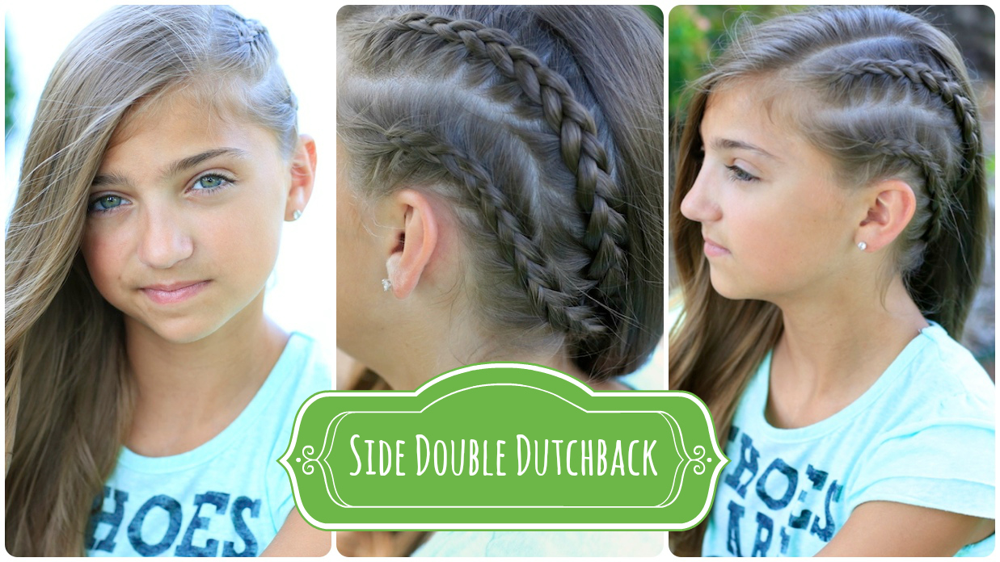
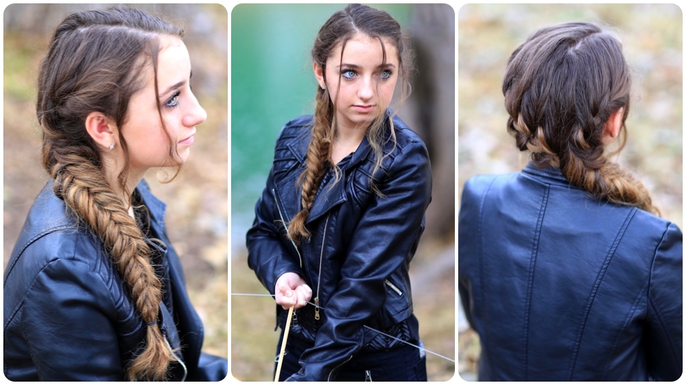
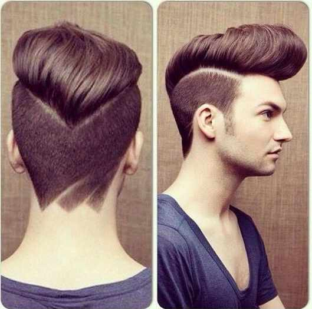

|  |
Have you seen Maleficent yet?Such a AMAZING movie! We were sooooo excited to go see it and loved every minute! If you want a great movie to take your kids to this summer–this is it! Boys and girls alike! Naturally, since there was some pretty beautiful hair and makeup (SO fabulous!), we had to recreate one of Aurora’s hairstyles. She is every bit the Beauty, and loved her simple yet ethereal look. |
|  |
Stuffed Bun MohawkEasy and Cute Back to School Hairstyle Plus–Discount Code for the Amazing Knot Genie Hair Brush! (See below!) Welcome to one of our FAVORITE hairstyles! We did this WAAAY back on my blog when this blondie of mine was about 4 yrs. old. Here she is: And this hairstyle is as cute on her now as it was then! (4 1/2 yrs. later). |
|  |
High fade haircutIn 2013, among men medium hair lengths are popular and trendy. Men can carry these hair lengths with the unique and trendy styles. Some like to carry messy hairstyles and some like to carry straightened or spiky hairstyles. They can carry these trendy hairstyles to look unique and trendy and also different from others. Here are some popular and trendy styles of men’s haircuts hat are also popular in 2013 |